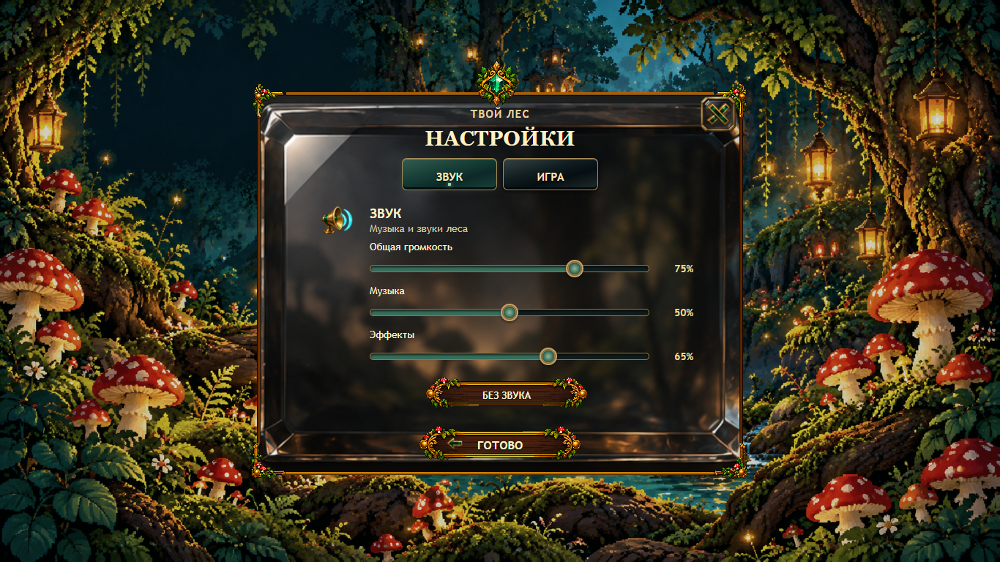
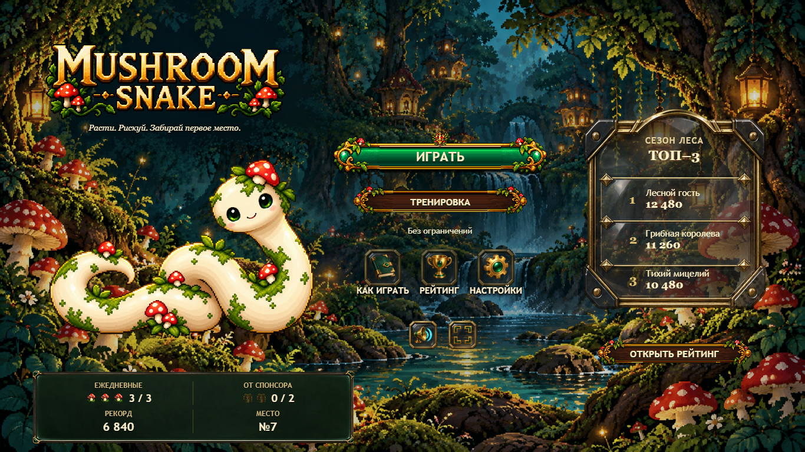

Premium V5.3.2 · TEST
Presentation / shared host only. Открыть настоящий TEST · Причины, QA, protected closure · Публикация / checkpoints
Sound — три открытых ползунка, без игровых настроек

Desktop native 1366×768.
Main — Record / Rank только в Status Board

Production / Fly gameplay / backend unchanged. STOP for human visual review.